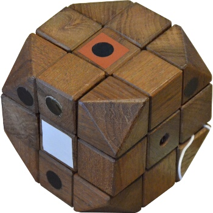

Erno Rubik was born July 13, 1944, in Budapest Hungary. Raised by his poet mother and engineer father, Rubik obtained formal education at the Academy of Applied Arts and Design where he studied sculpture. It was after becoming a professor of design at the academy that he built the first prototype of the modern puzzle in 1977.
Initial prototype of the cube, made from wood.
By the 1980s, after much development, including the addition of color to make movement visible, and three years on the market, 100 million cubes had been sold.